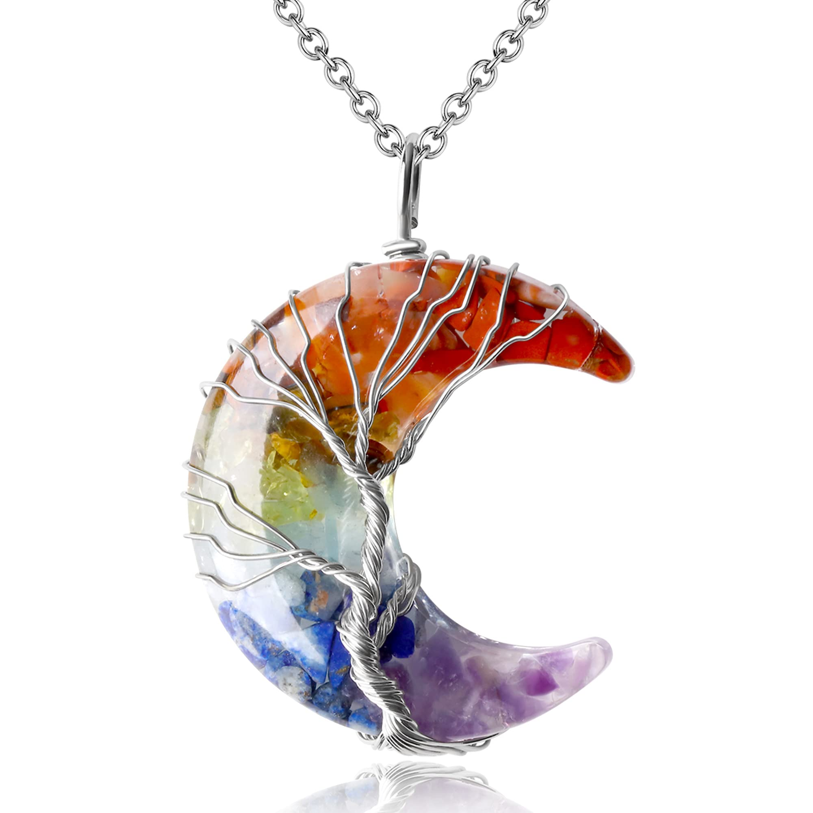

₮30,000
☯️Хүний биеийн чакра болон эрч хүч энергийг байгалийн чулуугаар нөхнө гэдэг нь гайхалтай сайхан боломж юм.
🕉Хүний бие энергийн 7-н түвшинтэй байдаг бөгөөд янз бүрийн шалтгаанаар гэмтдэг. Гэнэтийн муу зүйл тохиолдоход,
хүнтэй муудалцахад, хүнд гомдоход, уурлахад гэх мэт бидний өдөр тутамд маш олон сөрөг зүйлс тохиолдолд энэ болгонд
энергийн түвшинд өндөр хүн бол яах ч үгүй даваад гарна.
⚛️Харин чакра нь гэмтэх тохиолдол маш их. Чакра энерги гэмтсэнээр сэтгэл санаа тогтворгүй байх байнга айж, түгших, нойр тавгүйрхэх,
байнга ууртай байх, бүх зүйлс болохгүй бүтэхгүй байгаа мэт санагдах, сэтгэлээр унах гэх мэт маш олон сэтгэл зүйн өөрчлөлт гардаг.
Энэ болгонд энергийн эмчилгээ янз бүр байдаг ч байгалийн чулуун энерги нь илүү байдаг.